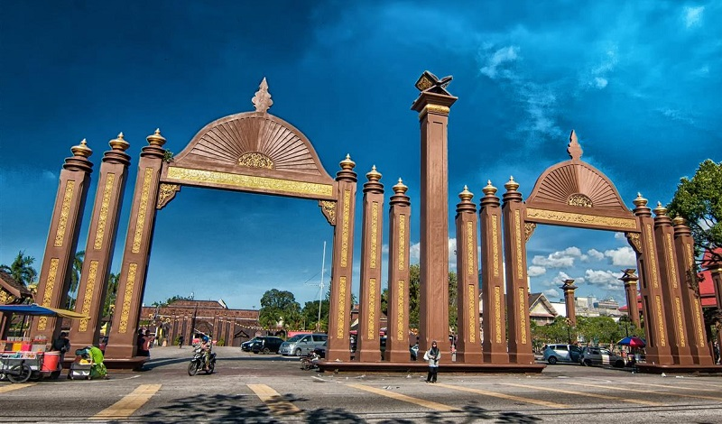
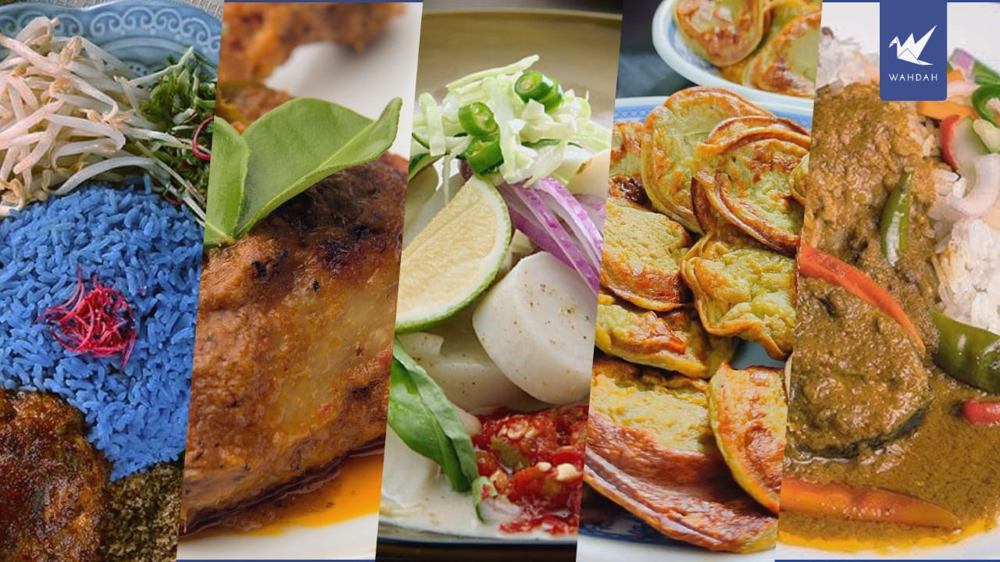

A place filled with memories, comfort, beautiful scenery and meaningful moments.

My roots are in Kelantan, a place where culture, tradition, and daily life blend beautifully together.

One of my favorite things about my hometown is the delicious local food and traditional cuisine. Now that I’m in university and away from home, I find myself missing it a lot especially Nasi Kerabu.
Kelantan is also full of natural beauty, but it is something people don’t usually mention or appreciate enough.
| Category | Details |
|---|---|
| State | Kelantan |
| Famous Food | Nasi Kerabu, the Iconic Budu, Akok, Laksam, Mee Celup and Ayam Percik |
| Interesting Place | Pantai Senok, Pasar Siti Khadijah, Jeram Mengaji, Min Fireflies Garden and Istana Jahar |
| Special Memory | Spending time with my family and friends 𖹭 |
Click below to watch a beautiful video about Kelantan.
Watch Here 🌸